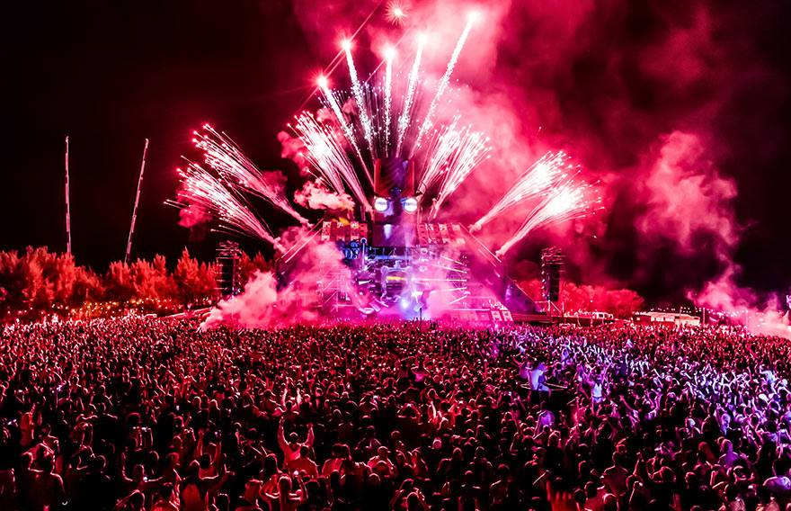

UMF
Es un festival anual de musica Electronica
Tomorrowland

Es un festival de musica que nacio en boom,Belgica

Defqon.1
Es un festival de musica anual que se celebra en Australia y Chile
EDC
Es un festival de musica Electronica de baile organizado por la empresa Insomniac Events
Summerland
Era un festival de musica Electronica al aire libre que tenia lugar en Colombia
Ultramar Festival
Fue un festival de musica Electronica que se celebro en Colombia
Aquasella
Es un festival de musica Electronica que se celebra en Arriondas, Asturias y España
GEM Fest
Es un festival de musica Electronica internacional, que se lleva a cabo cada año en Anakila,Georgia
Winter Music Conference
Es una conferencia de musica Electronica con una duracion maxima de 1 semana
Medusa Sunbeach Festival
Es un festival de musica Electronica dirigido a personas de 18 a 35 años